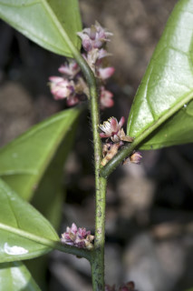
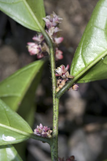

Large shrubs or small trees up to 7 m tall.
ದೊಡ್ಡ ಗಾತ್ರದ ಪೊದೆಗಳು ಅಥವಾ 7 ಮೀ. ಎತ್ತರದವರೆಗಿನ ಸಣ್ಣಮರಗಳು.
Large shrubs or small trees up to 7 m tall.
பெரிய குத்துச்செடி அல்லது சிறிய மரம் 7 மீ. உயரம் வரை வளரக்கூடியது.
Young branchlets angular to subterete, hirsute.
ಕಿರುಕೊಂಬೆಗಳು ಕೋನಯುಕ್ತದಿಂದ ಉಪದುಂಡಾಗಿರುವ ಆಕಾರ ಹೊಂದಿರುತ್ತವೆ,ಒರಟು ರೋಮದಿಂದ ಕೂಡಿರುತ್ತವೆ.
Young branchlets angular to subterete, hirsute.
சிறிய நுனிக்கிளைகள் குறுக்குவெட்டுத் தோற்றத்தில் கோணங்களுடையது முதல் கிட்டதட்ட வளையமானது, உரோமங்களுடையது.
Leaves simple, alternate, spiral; petiole 0.3-1.2 cm long, canaliculate, hirsute when young; lamina 7-20 x 3.5-6 cm, elliptic to narrow elliptic-oblanceolate, apex caudate - acuminate, base acute to cuneate, margin serrate or serrulate, chartaceous to subcoriaceous, glabrous, drying greenish; midrib canaliculate above; secondary_nerves 5-10 pairs, lowermost pair straight and acute; tertiary_nerves reticulo-percurrent.
ಎಲೆಗಳು ಸರಳವಾಗಿದ್ದು ಪರ್ಯಾಯ ಮತ್ತು ಸುತ್ತು ಜೋಡನಾ ವ್ಯವಸ್ಥೆಯಲ್ಲಿರುತ್ತವೆ; ತೊಟ್ಟುಗಳು 0.3 – 1.2 ಸೆಂ.ಮೀ. ಉದ್ದವಿದ್ದು, ಕಾಲುವೆಗೆರೆ ಸಮೇತವಿದ್ದು, ಎಳೆಯದಾಗಿದ್ದಾಗ ಒರಟು ರೋಮಗಳಿಂದ ಕೂಡಿರುತ್ತವೆ; ಪತ್ರಗಳು7– 20 X 3 .5 – 6 ಸೆಂ.ಮೀ. ಗಾತ್ರ, ಅಂಡವೃತ್ತದಿಂದ,ಸಂಕುಚಿತ ಅಂಡವೃತ್ತ-ಬುಗುರಿ ಭರ್ಜಿಯವರೆಗಿನ ಆಕಾರ , ಬಾಲರೂಪಿ - ಕ್ರಮೇಣ ಚೂಪಾಗುವ ಮಾದರಿಯ ತುದಿ, ಚೂಪಾದುದರಿಂದ ಬೆಣೆಯಾಕಾರದವರೆಗಿನ ಮಾದರಿಯ ಬುಡ, ಗರಗಸ ದಂತಿತ ಅಥವಾ ಸೂಕ್ಷ್ಮ ಗರಗಸ ದಂತಿತವಾದ ಅಂಚು, ಪತ್ರಗಳ ಮೇಲ್ಮೈ ಕಾಗದವನ್ನೋಲುವ ಮಾದರಿಯಿಂದ ಉಪತೊಗಲನ್ನೋಲುವ ಮಾದರಿಯಲ್ಲಿದ್ದು ರೋಮರಹಿತವಾಗಿರುತ್ತವೆ, ಒಣಗಿದಾಗ ಹಸಿರು ಛಾಯೆಯನ್ನು ಹೊಂದಿರುತ್ತದೆ; ಮಧ್ಯನಾಳ ಪತ್ರದ ಮೇಲ್ಭಾಗದಲ್ಲಿ ಕಾಲುವೆಗೆರೆ ಸಮೇತವಿರುತ್ತದೆ;ಎರಡನೇ ದರ್ಜೆಯ ನಾಳಗಳು 5 – 10 ಇದ್ದು ,ತೀರಾ ಕೆಳಗಿನ ಜೋಡಿಗಳು ನೇರವಾಗಿ ಮತ್ತು ಚೂಪಾಗಿರುತ್ತವೆ;ಮೂರನೇ ದರ್ಜೆಯ ನಾಳಗಳು ಜಾಲಬಂಧ ನಾಳ ವಿನ್ಯಾಸದಲ್ಲಿದ್ದು ಎಲೆ ದಿಂಡಿಗೆ ಅಡ್ಡವಾಗಿ ಕೂಡುತ್ತವೆ.
Leaves simple, alternate, spiral; petiole 0.3-1.2 cm long, canaliculate, hirsute when young; lamina 7-20 x 3.5-6 cm, elliptic to narrow elliptic-oblanceolate, apex caudate - acuminate, base acute to cuneate, margin serrate or serrulate, chartaceous to subcoriaceous, glabrous, drying greenish; midrib canaliculate above; secondary_nerves 5-10 pairs, lowermost pair straight and acute; tertiary_nerves reticulo-percurrent.
இலைகள் தனித்தவை, மாற்றுஅடுக்கமானவை, சுழல் போன்று அமைந்தவை; இலைக்காம்பு 0.3-1.2 செ.மீ. நீளமானது, குறுக்குவெட்டுத் தோற்றத்தில் கேனாலிகுலேட், இளம்பருவத்தில் உரோமங்களுடையது; இலை அலகு 7-20 X 3.5-6 செ.மீ., நீள்வட்ட வடிவானது முதல் குறுகிய நீள்வட்டம் அல்லது தலைகீழ் ஈட்டி வடிவானது, அலகின் நுனி வால்-அதிக்கூரியது, அலகின் தளம் கூரியது முதல் ஆப்பு வடிவானது, அலகின் விளிம்பு ரம்ப பற்களுடையது அல்லது சிறிய ரம்ப பற்களுடையது, சார்ட்டோசியஸ் முதல் சப்கோரியேசியஸ், உரோமங்களற்றது, உலரும் போது பச்சை நிறமானது; மையநரம்பு மேற்புறத்தில் அலகின் பரப்பைவிட பள்ளமானது; இரண்டாம் நிலை நரம்புகள் 5-10 ஜோடிகள், தளத்திலுள்ள ஒர் ஜோடி நரம்புகள் நோரானது மற்றும் குறுகிய கோணமுடையது; மூன்றாம் நிலை நரம்புகள் வலைப்பின்னல்-பெர்க்கரண்ட் போன்றவை.
Inflorescence racemes, up to 4 cm long; flowers pink; pedicels up to 0.2 cm long.
ಪುಷ್ಪಮಂಜರಿ ಮಧ್ಯಾಭಿಸರ ಮಾದರಿಯವುಗಳಾಗಿದ್ದು 4 ಸೆಂ.ಮೀ ವರೆಗಿನ ಉದ್ದ ಹೊಂದಿರುತ್ತವೆ;ಹೂಗಳು ನಸುಗೆಂಪು;ತೊಟ್ಟುಗಳು 0.2 ಸೆಂ.ಮೀ.ವರೆಗಿನ ಉದ್ದವಿರುತ್ತವೆ.
Inflorescence racemes, up to 4 cm long; flowers pink; pedicels up to 0.2 cm long.
மஞ்சரி ரெசீம் வகை மஞ்சரி, 4 செ.மீ. நீளமானது; மலர்கள் பிங்க் நிறமானது; மலர்க்காம்பு 0.2 செ.மீ. நீளமானது.
Drupe, narrowly ovoid, 1.2-2 x 0.5 cm, red when ripe; seed grooved.
ಡ್ರೂಪ್ಗಳು ಸಂಕುಚಿತವಾದ ಅಂಡದಾಕೃತಿಯಲ್ಲಿದ್ದು, 1.2 – 2 X 0.5 ಸೆಂ.ಮೀ.ವರೆಗಿನ ಗಾತ್ರದಲ್ಲಿದ್ದು,ಕಳಿತಾಗ ಕೆಂಪು ಬಣ್ಣ ಹೊಂದಿರುತ್ತವೆ;ಬೀಜಗಳು ತೋಡು ಗುರುತುಗಳ ಸಮೇತವಿರುತ್ತವೆ.
Drupe, narrowly ovoid, 1.2-2 x 0.5 cm, red when ripe; seed grooved.
உள்ளோட்டுத்தசைகனி (ட்ரூப்), குறுகிய முட்டை வடிவானது, 1.2-2 X 0.5 செ.மீ., கனியும் போது சிவப்பு நிறமானது; விதை பள்ளங்களுடையது.


 
